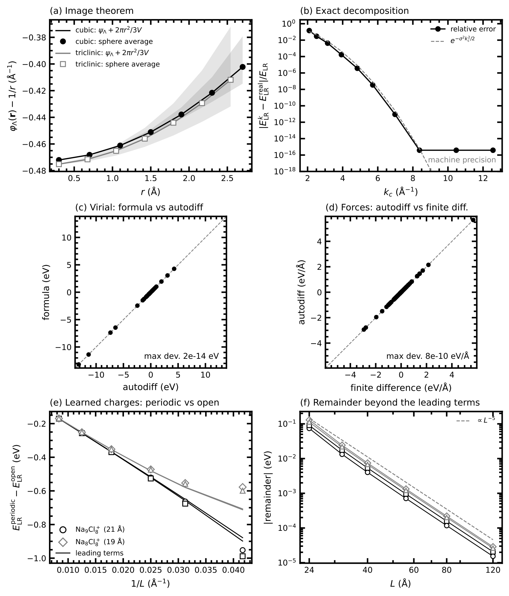
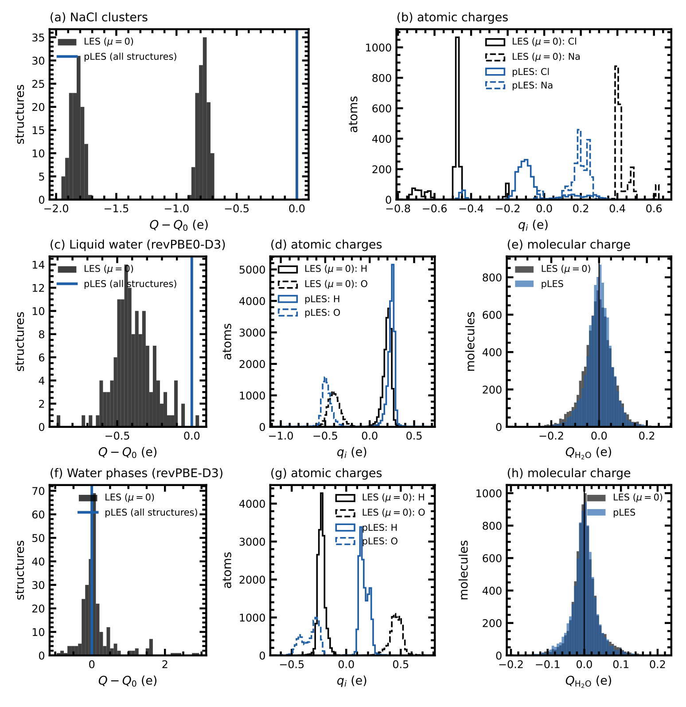
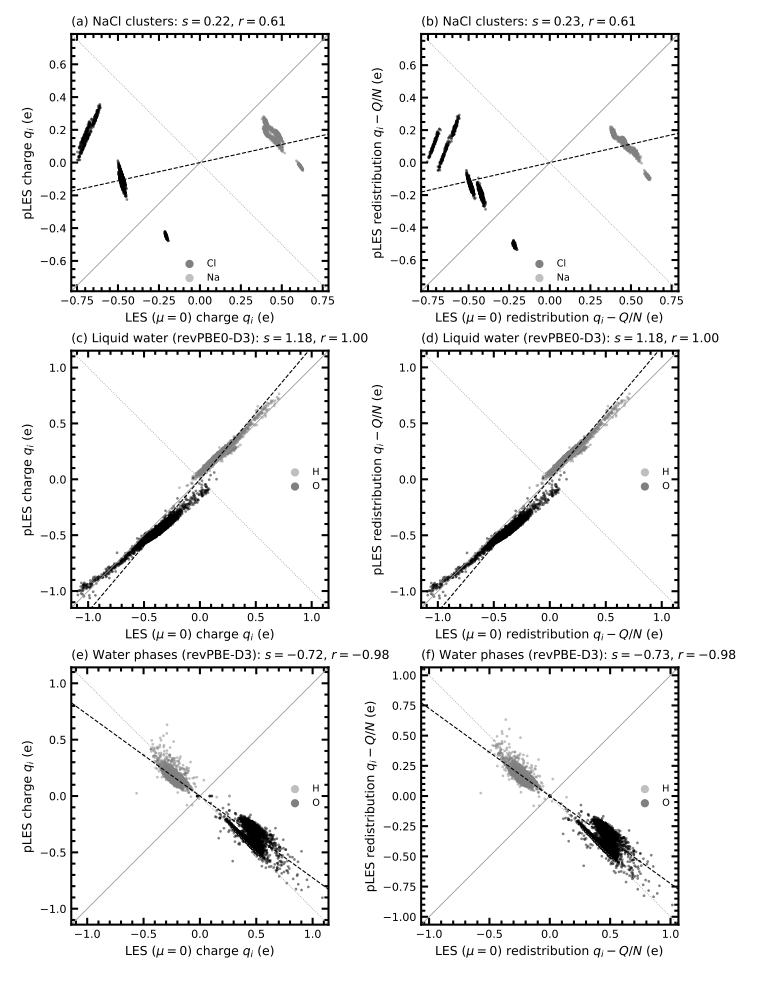
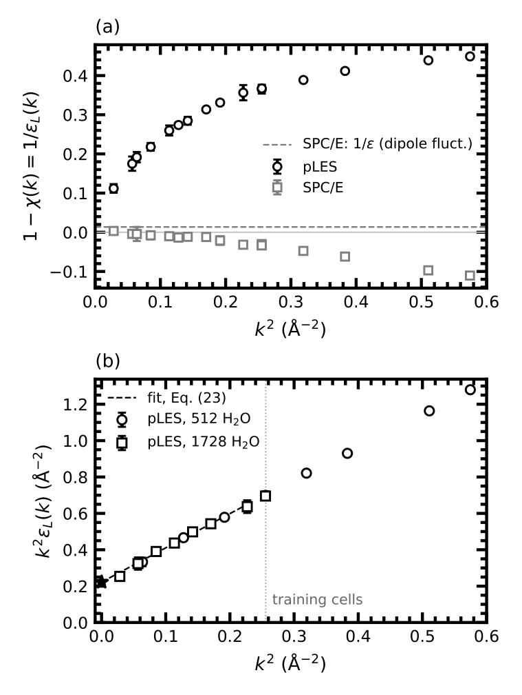

pLES：从潜电荷的周期静电学，厘清长程机器学习势怎样产生介电响应
论文原文 ↗论文：Eslam Ibrahim，Exact periodic electrostatics for latent-charge machine-learning potentials，arXiv，2026。
链接：官方页面｜
长程机器学习势有一条很简洁的路线：让局部原子环境预测一个标量“潜电荷”，再把这些电荷送入 Ewald 求和，得到远距离静电能。训练只需要能量和力，电荷作为模型内部变量一起学出来。这就是潜 Ewald 求和（LES）。它为短程势补上库仑尾部，但也带来一个新的物理问题：由拟合能量和力得到的电荷，其总和、尺度和集体涨落各自意味着什么？
这篇工作从周期静电学出发，把这些问题放进同一个数学框架。作者分离了净电荷造成的晶胞伪影与局部自能，推导力和应力，并把 LES 与电荷平衡方法连接起来，得到固定总电荷的投影形式 pLES。NaCl 带电团簇说明全局电荷约束怎样补足局部模型的信息；水的长波长响应则给出更深一层的结果：保证整个晶胞中性与保证局部电荷守恒，是不同层次的物理要求。
方法怎样做：先确定周期能量，再明确哪些电荷自由度需要约束
从一个水盒或带电团簇出发
在原子簇展开（ACE）中，一个原子的邻居元素、距离和角度被写成一组对称性一致的基函数。通常这些基函数用于预测局部原子能；作者再从同一组环境特征预测原始潜电荷 \(\tilde q_i\)。因此，一份原子坐标产生两路输出：局部能量，以及将进入长程求和的电荷。
pLES 在求和前做一次总量修正：
\[ q_i=\tilde q_i-\frac{w_i}{\sum_jw_j} \left(\sum_j\tilde q_j-Q_0\right). \]
这里 \(Q_0\) 是要求的总潜电荷，正权重 \(w_i\) 决定各原子承担多少修正。若原始总和多出一个电荷单位，程序就按权重把它分摊减去。中性水盒取 \(Q_0=0\)；本文孤立 NaCl 阳离子团簇取 \(Q_0=+1e\)。这一步只需计算全局总和，随后仍保留每个原子对局部环境的响应。
周期体系把电荷平滑成高斯分布，计算各倒空间波矢上的电荷结构因子。结构因子可以理解为：用不同波长观察整盒电荷，正负电荷在这个尺度上相加或抵消后，还剩多大起伏。把各波长的贡献乘以平滑库仑核再相加，就得到长程能量；孤立团簇则使用相应的开放边界高斯电荷相互作用。局部能量与长程能量一起对参考能量和力训练。
为什么总电荷会进入周期伪影
周期边界把一个晶胞无限复制，Ewald 求和同时规定了怎样处理整体电荷及边界。作者将平滑库仑和写成 Epstein–Hurwitz 晶格和——一种能统一整理所有周期像贡献的数学表达——从中分离出三类项：原子间相互作用、每个高斯电荷的自能，以及随晶胞几何和总电荷平方变化的项。
自能只依赖各原子电荷，可以与局部能量一起表示；净电荷项则随盒子大小和形状变化。如果中性体系的模型每个构型预测出不同净电荷，这个项还会产生额外的力。投影把中性盒的总电荷严格固定为零，便直接消去这一项。作者进一步给出适用于任意晶胞形状的球平均关系，说明周期像对平均库仑势增加了哪些常数与二次项。

图1｜同一周期静电表达的不同检验（原文 Fig. 1）。a 比较立方、三斜晶胞的球平均关系；b 是倒空间与实空间计算的一致性；c、d 比较维里和力；e、f 显示已训练团簇电荷的周期能量如何随盒子大小趋向开放边界结果。
力的计算还必须跟上电荷的变化：移动一个原子既改变电荷间距离，也改变模型根据环境预测的电荷。因此，力包括显式静电力和“电荷如何随坐标变化”的导数。晶胞应变的导数同样进入维里，用于压力与应力。作者把这一链条实现进 ACE 和 LAMMPS：先预测并投影电荷，计算长程能量及对电荷的导数，再通过一次 ACE 反向传播把它传回坐标。
pLES 与传统电荷平衡是什么关系
电荷平衡（QEq）给每个原子指定电负性和硬度，再在固定总电荷下最小化电荷能量。电负性决定吸引电子的倾向，硬度惩罚电荷偏离；原子之间的库仑耦合使所有电荷共同求解。
作者从这同一变分问题构建一条层级：完整求解得到全局 QEq；对库仑耦合做一阶展开得到诱导电荷近似；在决定电荷这一步省略原子间耦合、只保留各原子硬度，就得到 pLES 的投影，其中权重等于硬度的倒数。若固定化学势而不固定总电荷，则得到无约束 LES；进一步令环境参数固定，便连接到固定电荷力场。
这条关系解释了 pLES 为什么成本低：它用一次全局修正代替每一步的联立方程求解。投影确定电荷后，长程库仑能照常计算，坐标导数也照常回传。
主要结果：电荷总量、内部表示与长波长响应分别回答什么
1. 带电 NaCl 团簇：全局约束给局部模型补上整体信息
测试中有两类总电荷均为 +1 的团簇：从 \(\mathrm{Na_9Cl_8^+}\) 移去一个中性 Na 原子，得到 \(\mathrm{Na_8Cl_8^+}\)。其余原子位置保持不变，但电荷要在整个团簇重新分配。远处原子的局部邻域没有发生变化，纯局部模型因而很难感知这一操作的整体影响。
作者用相同的短程 ACE 设置、2000个训练结构和250个独立测试结构，比较纯 ACE、无约束 LES 和 pLES，训练均只使用能量和力。纯 ACE 的测试能量误差为 1.44 meV/atom、力误差约 37 meV/Å；加入 pLES 后降为 0.42 meV/atom和约 13 meV/Å。无约束 LES 也明显改善拟合，但其预测电荷总和相对目标最多偏离约 1.8e；pLES 通过输入的总电荷使两种团簇都保持 +1。

图2｜全局约束改变什么（原文 Fig. 2）。左列比较总电荷相对目标的偏差，蓝色 pLES 集中在零；其余面板给出原子及水分子电荷。整盒总和固定以后，单个水分子的潜电荷仍可涨落。
这组结果也把两种学习目标分开了：能量和力可以拟合得相当接近，而总电荷仍存在明显差别。指定整体电荷是向模型提供一项独立的全局信息，随后局部电荷分配继续由训练决定。
2. 水：潜电荷有稳定模式，也有符号与尺度自由度
作者分别使用液态水和覆盖液体、冰及高压构型的水数据训练。pLES 保持每个中性晶胞的电荷和为零，并降低短程 ACE 的能量、力误差。更有物理启发的是，把独立训练的 LES 与 pLES 逐原子比较：液态水两者电荷几乎完全线性相关；多相水中，二者则几乎以相反符号线性相关。将整体符号和尺度统一后，它们学习到了很相似的电荷分布模式。

图3｜不同模型怎样学到相近的内部表示（原文 Fig. 3）。每点对应同一个原子在两个模型中的电荷；左列是原始电荷，右列扣去平均总量。水的点集中在直线附近，多相水的负斜率直观显示了整体符号反转。
原因在于，静电能包含电荷乘积，同时把所有电荷反号，能量保持不变；短距离电荷分配和自能的变化，还可以与局部能量共同补偿。这些没有被唯一固定的选择，称为潜电荷的规范自由度。整体尺度虽不是严格对称性，却可能受有限尺寸训练数据约束较弱，并与模型的屏蔽响应共同确定。
因此作者把物理一致性的目标放在相距足够远的分子或离子片段总电荷上：片段内部允许重新分配，片段整体按共同尺度对应形式电荷。若直接要求每个原子的潜电荷都等于缩放后的整数氧化数，会把环境依赖电荷压回固定电荷模型。片段约束既保留内部极化自由度，也接到了下一项介电分析。
3. 水的屏蔽：局部守恒决定模型的长波长类别
介电质通过局部偶极转向或形变削弱电场；导体还允许电荷在远距离重新分布，产生更强的长波长屏蔽。这里研究的“潜介电响应”，是长程能量中那一通道的电荷如何响应外势。作者用不同大小水盒中的电荷结构因子涨落，得到随波矢 \(k\) 变化的纵向介电响应；越小的 \(k\)，对应越大的观察尺度。
理论给出一个清楚的判据：若每个分子始终中性，或电荷只能在有限距离的邻居之间转移，长波长电荷密度可写成局部极化的散度。在极化响应有限时，这就保证得到有限介电常数。若只约束整个盒子的总和，某个分子因局部构象得到的潜电荷可以由全盒分摊补偿；这类模型允许出现导体式屏蔽。全局中性本身没有指定补偿发生在多远处。

图4｜不同空间尺度上的屏蔽（原文 Fig. 4）。a 比较 pLES 与分子电荷严格守恒的 SPC/E；b 将 pLES 响应转换成有助于区分长波长行为的量，圆和方点来自不同大小的盒子。竖虚线标出训练小盒能达到的最小波矢，左侧对应更长距离。
作者在300 K下分别模拟512和1728个水分子的盒子。pLES 的整盒电荷保持零，但单个水分子的潜电荷涨落约0.039e，并主导可采到波长范围内的屏蔽。分子严格中性的 SPC/E 对照则表现出不同的波矢依赖，其由电荷结构涨落和总偶极涨落得到的长波长响应相互对应。
对 pLES 数据，作者进一步拟合一个从中间尺度向更长尺度过渡的模型。这一交叉形式排除了导体极限，给出潜介电常数约29，区间19–71；相应电荷补偿距离约1.2 nm。训练所用64分子盒没有覆盖这一更长波长区域，而更大盒子的分析揭示了已训练模型怎样组织分子间电荷补偿。由此，论文区分了“这一训练模型通过相关性形成有限响应”和“电荷模型的守恒结构保证有限响应”两种机制。
对领域的贡献：让长程势的物理要求从能量尾部延伸到守恒结构
这篇工作的价值在于把长程模型的几个常被分开处理的问题连接起来：周期像怎样改变能量，净电荷怎样引入力，潜电荷有哪些可变而不唯一的表示，以及微观电荷规则怎样决定宏观屏蔽。pLES 提供了成本很低的全局电荷控制，NaCl 和水测试展示了它与局部势的具体组合。
更具迁移意义的认识，是长程求和形式与电荷守恒形式需要共同设计。对绝缘分子体系，片段投影能保持各分子的总电荷；对可能发生反应的体系，以邻居间等量反向的电荷转移构造潜电荷，则提供了保留局部守恒的方向。作者的分析由此把长程 MLIP 的评价推进到不同空间尺度上的响应，让小盒能量和力之外的集体行为也成为可计算、可解释的模型性质。
原始摘要完整中文翻译
潜 Ewald 求和（LES）类型的潜电荷机器学习原子间势，从能量和力中学习原子电荷，并在倒空间评价其静电能。我将这一长程项写成平滑的 Epstein–Hurwitz 晶格和，并推导其精确的周期结构：分离净电荷伪影与局部自能的分解、适用于任意形状晶胞的球平均（周期像）定理，以及力和维里。完整电荷平衡、带诱导电荷的LES、受约束与无约束LES模型，以及固定电荷力场，都可作为同一个变分问题的逐级近似得到；该问题在对角硬度极限下，就是将潜电荷投影到固定总电荷，我将所得方案称为投影潜Ewald求和（pLES）。能量和力只能在规范自由度范围内确定潜电荷，因此，一致的目标应是片段层面的电荷量子化，而非原子层面的电荷量子化。长波长响应表明，只有局部电荷守恒时，潜电荷通道才保证表现为介电质；作为局部环境函数、至多只满足全局守恒的潜电荷，也可能像导体一样屏蔽。pLES 已在原子簇展开和 LAMMPS 中实现，精确恒等关系在机器精度下成立，对已训练模型的电荷也同样成立。对于带电 NaCl 团簇，pLES 恢复了无约束模型最多偏离1.8e的总电荷，并将短程模型的测试误差从1.44降至0.42 meV/atom、从37降至13 meV/Å。在两套水数据中，独立训练的受约束和无约束模型在整体符号及尺度变换下学到了相同的潜电荷，而投影使每个晶胞严格中性。在pLES水的分子动力学中，潜分子电荷发生涨落，并在所有可及波长上主导屏蔽，这与固定电荷水模型不同。在一个交叉模型内，其波矢依赖排除了导体，并给出19至71之间的潜介电常数；它由约1 nm范围内的分子电荷补偿决定，而训练晶胞没有探测到这一尺度。只有通过电荷模型中的局部电荷守恒，才能保证有限介电常数。